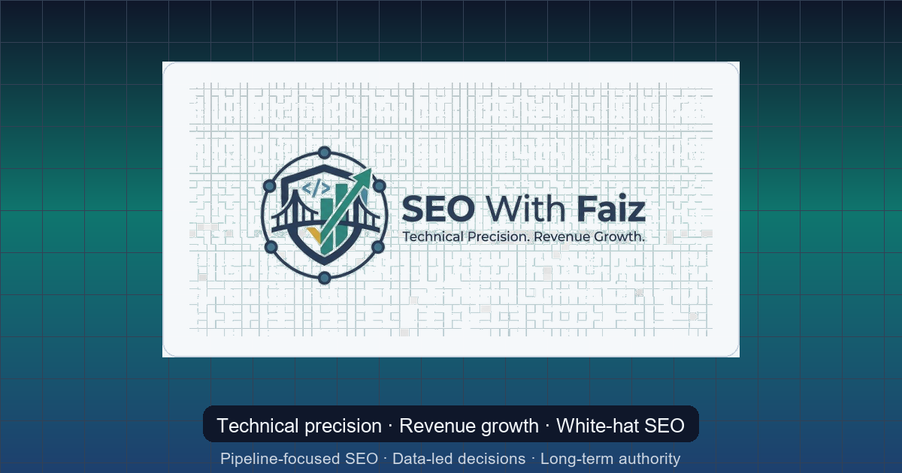

Quick answer: AEO is the practice of structuring your content and entities so AI answer engines can extract, trust, and cite you. You earn it with clear answers, consistent entities, structured data, and third-party corroboration — not keyword stuffing.

The search results page is no longer the finish line. In 2026, a growing share of queries are answered before anyone clicks — inside Google's AI Overviews, ChatGPT, Perplexity, and other answer engines. Answer Engine Optimization (AEO) is how you stay visible in that world: by making your content easy for machines to extract, trust, and cite.
This guide gives you a practical, no-hype framework you can apply this quarter — grounded in the same fundamentals that make traditional SEO work, extended for generative search.
Why AEO matters now
When an answer engine resolves a question directly, the old model of "rank #1, earn the click" breaks down. Visibility now means being the source the model quotes, with your brand named and your link surfaced as a citation.
That is not a reason to abandon SEO — crawlability, search intent, and authority still decide whether you are eligible at all. AEO simply adds a new objective on top: be the most extractable, most corroborated answer for a question.
If traditional SEO asks "does this page deserve to rank?", AEO asks "does this passage deserve to be quoted — and can a machine trust who said it?"
The four pillars of Answer Engine Optimization
1. Extractable answers
Answer engines lift short, self-contained passages. Lead each section with the answer, then expand.
- Put a direct answer in the first two or three sentences under a clear, question-style heading.
- Keep one primary question per section so a passage can stand alone.
- Use lists, definitions, and tables where they make the answer easier to extract.
2. Entity clarity
Models reason about entities — your brand, your people, your services — not just keywords. Make those entities unambiguous.
- Maintain a consistent name, role, and description for your brand and author across every page.
- Connect entities with internal links and
sameAsreferences to your verified profiles. - Define your services in plain language that matches how people actually ask.
3. Structured data
Schema does not buy a citation, but it removes ambiguity and reinforces the entity graph answer engines rely on. Use Organization, Person, Article/BlogPosting, FAQPage, and HowTo where they describe real content — never as decoration.
4. Corroboration and trust
This is the pillar most teams miss. An answer engine is far more likely to cite a claim that is consistent across multiple reputable sources. On-page formatting gets you eligible; corroboration gets you chosen.
- Earn mentions and links from credible, topically relevant sites.
- Keep facts about your brand consistent everywhere they appear.
- Show real evidence: case studies, data, and named expertise.
A 30-day AEO starting plan
You do not need a replatform to start. A focused month moves the needle:
- Audit extractability. Pick your ten most important pages and rewrite the opening of each section to answer first.
- Fix entities. Standardize brand/author details and add the right schema.
- Map questions. Build a list of the real questions buyers ask, and ensure each has a clean, answerable home on your site.
- Pursue corroboration. Line up two or three credible mentions or citations that reinforce your key facts.
If you want this done with technical discipline, the SEO audit playbook and the full service catalog show how the pieces fit together.
What AEO does not mean
AEO is not keyword stuffing for robots, and it is not abandoning humans. The same content that earns citations is the content that serves readers well: clear, honest, evidence-backed, and easy to navigate. Write for people first — then make it trivial for machines to understand and trust.
Frequently asked questions
What is Answer Engine Optimization (AEO)?
AEO is the practice of structuring content, entities, and trust signals so AI answer engines (such as Google AI Overviews, ChatGPT, and Perplexity) can extract a clear answer from your page and cite you as a source. It extends SEO from ranking pages to being quoted inside generated answers.
How is AEO different from traditional SEO?
Traditional SEO optimizes a page to rank in a list of links. AEO optimizes passages and facts to be lifted directly into an AI-generated answer. SEO fundamentals (crawlability, intent, authority) still apply, but AEO adds extractable answer formatting, entity consistency, and corroboration across third-party sources.
How do I get cited by ChatGPT or AI Overviews?
Give a direct answer in the first two or three sentences under a question-style heading, back claims with evidence, mark up the page with relevant schema (FAQ, HowTo, Article, Organization), and make sure your key facts are corroborated on other reputable sites. Answer engines prefer sources that are clear, consistent, and verifiable.
Does structured data help with generative search visibility?
Yes, indirectly. Structured data does not force a citation, but it makes your entities and content unambiguous to machines, improves eligibility for rich results, and reinforces the entity graph that answer engines draw on. Use it where it accurately describes real content.
How do I measure AEO performance?
Track AI-surface impressions in Google Search Console, monitor whether your brand appears (and is cited) in AI Overviews, ChatGPT, and Perplexity answers for target questions, and watch assisted conversions from those visits. Treat citations and branded answer presence as leading indicators, not just rankings.
References
- developers.google.com — Creating Helpful Content
- developers.google.com — Intro Structured Data
- developers.google.com — Ai Features
Keep reading
Need this implemented for your business? Book a strategy call and share your target market and growth goals.